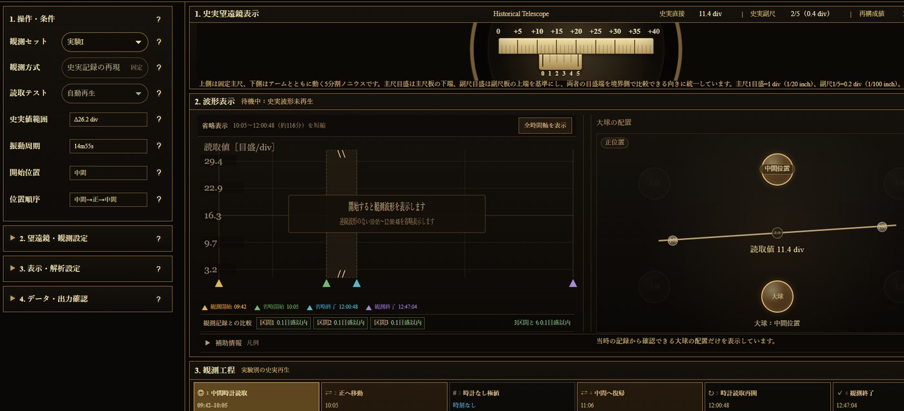
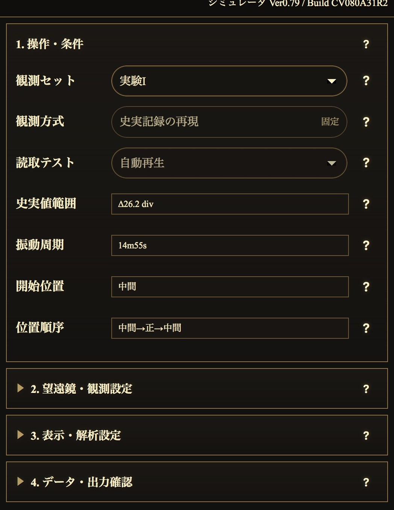
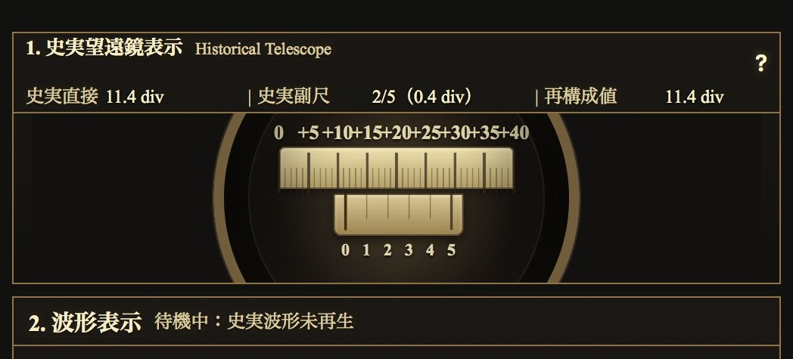
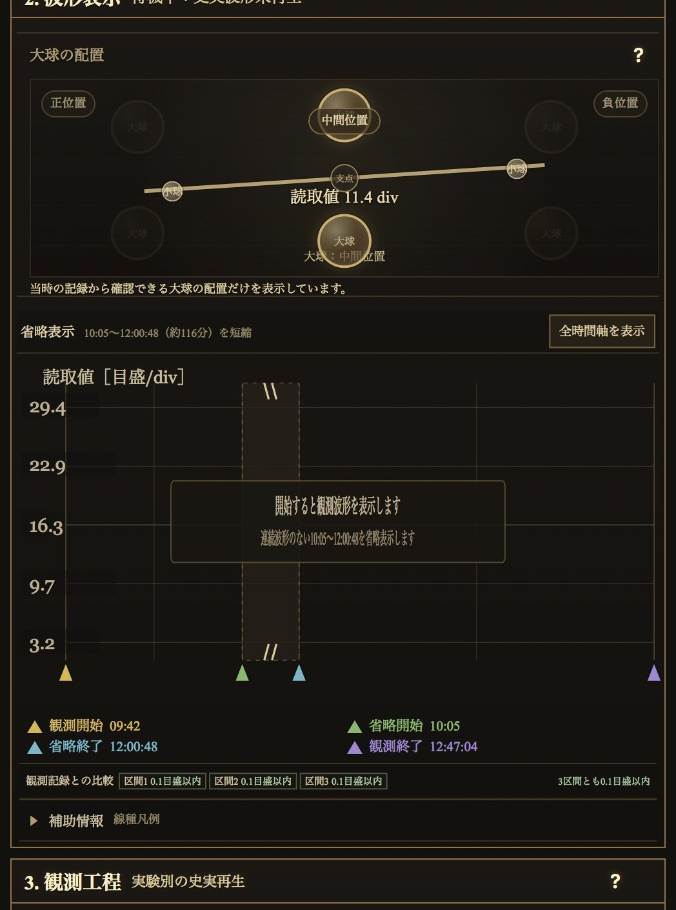
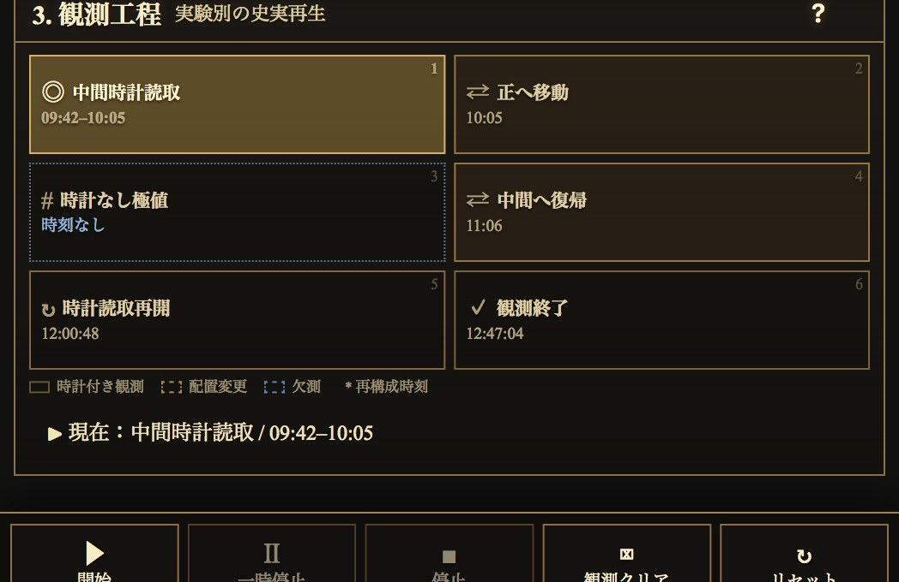

大球の配置
原表に記録された正位置、負位置、中間位置とアームの向きを模式表示します。Motion Viewと1798年装置3Dの中間位置座標は、どちらも史実配置区分を説明するための模式・再構成表示です。時計時刻が確定できない移動は、前後の史実記録に挟まれた区間として示します。
IMPULSE LABO / CAVENDISH EXPERIMENT
検証画面の構成、Experiment I〜XVIIの確認方法、望遠鏡・波形・大球配置の見方、PDF・CSV出力の操作を整理します。
01
PCでは左側に操作・条件、右側に観測表示を配置します。Mobileでは同じ内容を上から順に表示し、操作ボタンを画面下部へ固定します。

02
現行版は史実記録の再現を目的としています。利用者が振幅や減衰を任意調整する方式ではなく、選択したExperimentの史実記録と再構成条件を読み込みます。
再生する史実観測セットを選びます。実験ごとに日付、原表行、時刻構造、位置順序が異なります。
望遠鏡、波形、大球配置、観測工程、読取記録、結果、PDF、CSVが切り替わります。
史実記録の再現であることを示します。変更する操作項目ではありません。
結果、PDF、CSVへ観測方式として記録されます。
史実工程を順番に再生します。開始後は望遠鏡、配置、波形、観測工程が同期します。
観測進行と出力メタ情報へ反映されます。
選択した観測セットの史実Read値が持つ範囲です。
波形の縦軸範囲を判断する基礎情報です。
原表記録から扱う振動周期です。利用者が変更する値ではありません。
条件付き再構成と波形表示に使用します。
大球がどの位置から始まり、どの順番で移動したかを示します。
大球配置、観測工程、波形の配置変更区間に反映されます。
Experimentを切り替えた後は、開始位置・位置順序・時計時刻範囲を確認してから開始してください。

03
選択した実験の史実再生を開始します。
現在位置を保持して停止し、同じボタンで再開します。
その時点で観測を終了し、得られた記録を保持します。
経過と結果を消去し、選択中の観測セットは保持します。
観測状態と選択を初期状態へ戻します。
観測完了後は史実波形を保持します。別のExperimentを確認するときは、観測クリアまたはリセット後に選択し直してください。
04
固定主尺と、アームに連動して動く5分割副尺を表示します。上下配置は読取比較のための表示上の再構成です。

05

原表に記録された正位置、負位置、中間位置とアームの向きを模式表示します。Motion Viewと1798年装置3Dの中間位置座標は、どちらも史実配置区分を説明するための模式・再構成表示です。時計時刻が確定できない移動は、前後の史実記録に挟まれた区間として示します。
縦軸はRead divです。横軸は史実時計軸または実験別に定義された記録順・再構成軸です。
変化のない長時間区間を圧縮します。「全時間軸を表示」で省略区間を展開できます。
時計付き観測、配置変更、時計時刻なし極値、読取再開、観測終了など、実験ごとの史実工程を示します。
時計時刻なし記録、欠測、凡例、原表記録順など、時計軸だけでは表せない情報を確認できます。
史実時刻、位置、種別、Read divを一覧表示します。全記録はCSVへ保存できます。
直接時計付き観測点間の表示ガイドです。連続測定そのものを意味しません。
交差時刻・振動中央時刻などに拘束した条件付き補完・再構成波形です。
史実の時計時刻付き直接読取、または目盛通過時刻です。
時計時刻が記録されていない極値などを、記録順と振幅の照合用に表示します。
未観測・欠測・補完しない区間です。根拠のない線で接続しません。
配置変更時刻が確定できない区間です。波形を接続せず区間として示します。
06

07
結果サマリーでは、原表から直接集計した値と、記録・計算の比較結果を分けて表示します。
現公開版の主結果はRead divです。角度、トルク、力、万有引力定数Gへの換算は、史実装置定数との接続検証後に扱う範囲であり、この画面では確定値として表示しません。
08
観測概要、大球配置、望遠鏡、史実波形、代表読取記録、結果サマリーをA4縦1ページへ整理します。
原表の時刻、位置、記録種別、Read div、出典ページ、原表行IDを保存します。
時計軸、条件付き補完、再構成値、残差、表示区分を詳細に保存します。
レポートプレビューで「PDF保存」を押します。iPhone Safariでは共有シートが開くため、「ファイルに保存」を選びます。
プリンタ出力が必要な場合に使用します。保存用PDFは「PDF保存」を使用してください。
プレビューで史実読取記録または再構成詳細を選び、「CSV保存」を押します。
09
10
史実直接値、時計時刻なし記録、条件付き再構成を区別します。再構成値を原表の直接観測値として扱わないでください。
原表の空欄、missed、時刻未記載値へ根拠のない値や擬似時刻を付与しません。未観測区間は空白として残します。
観測関係を理解するための上面図です。装置寸法や実験室全体を完全な縮尺で復元した図ではありません。
シミュレータ、レポート、CSVは個人端末情報を収集しません。
START
実験の背景、装置、史実資料の位置付けは解説ページで確認できます。